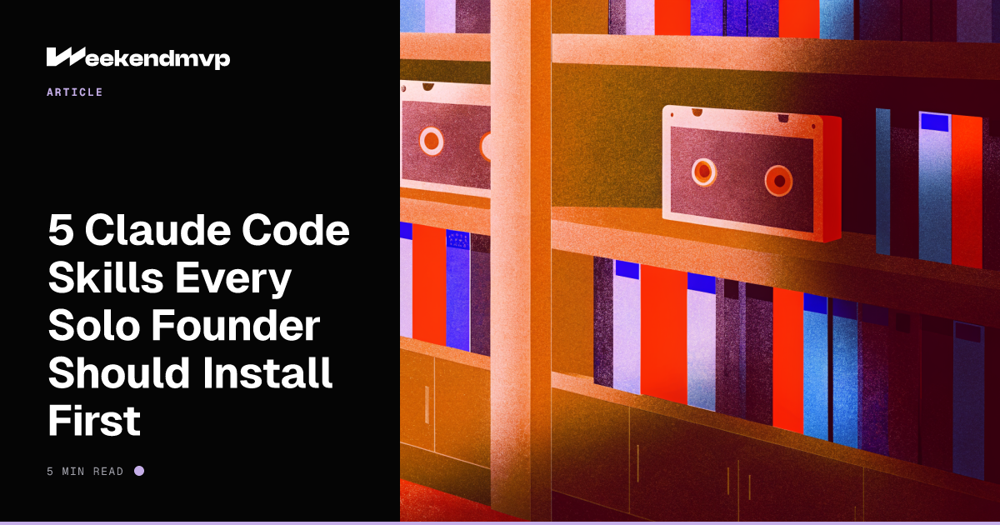

5 Claude Code Skills Every Solo Founder Should Install First
The most under-used feature in Claude Code. Each one removes a category of decisions you don't want to make.

First, What Is a "Skill"?
A Claude Code Skill is a packaged workflow. It bundles instructions, references, and a slash command into one thing Claude can invoke when the situation matches.
Think of it like hiring a specialist on your team. A normal Claude Code session is a generalist who can do anything. A Skill is a specialist who already knows how this team wants the job done.
As of 2026, Skills follow the open Agent Skills standard, which works across multiple AI tools. Claude Code adds extras like invocation control and dynamic context. Slash commands and skills are unified—every skill gets a /slash-command interface.
If you don't have Claude Code installed yet, start with the non-technical founder's guide.
How to Install a Skill (30-Second Version)
Most skills are distributed as plugins. Inside Claude Code:
For project-specific skills, drop a file into .claude/skills/<skill-name>.md. Claude picks them up automatically.
Brainstorming — for the "what should we even build?" moment
The problem it solves: Solo founders default to building before they've defined the thing. Brainstorming forces a structured pass: user, problem, solution, alternatives, success metric.
When to use it: Before any new feature. Before any new project. Before you "just quickly add" something.
Why it's worth installing: One round of structured brainstorming has saved more solo founders than any tool. Stops you from building the wrong thing for two weeks.
Frontend Design — so your app stops looking like a 2014 admin panel
The problem it solves: Default LLM-generated UIs look generic. Solo founders without design taste end up with apps that work but feel cheap, which kills conversion.
When to use it: Whenever you ask for a new screen, page, or component. The skill gives Claude opinions about hierarchy, spacing, type, and color—not just "make a button."
Why it's worth installing: The single biggest jump in perceived quality you can make without hiring a designer.
Ship — so deploys stop being a 30-minute ordeal
The problem it solves: Solo founders shipping fast end up with messy deploy rituals: forgetting to bump VERSION, skipping the changelog, pushing without running checks. The skill bundles "test → review diff → bump version → commit → push → PR" into one command.
When to use it: Every time you ship anything bigger than a typo fix.
Why it's worth installing: Removes the willpower cost of doing the right thing on every deploy. You'd skip steps if you had to remember them. The skill remembers.
Skills are great. So is having something worth shipping in the first place.
Browse Startup IdeasInvestigate — for when something breaks and you have no idea why
The problem it solves: Most solo founders debug by guessing and trying. The Investigate skill enforces a structured loop: reproduce → isolate → hypothesise → fix. No fixes without a root cause.
When to use it: Anytime you'd otherwise type "this is broken, please fix" into Claude. Especially for bugs that have come back twice.
Why it's worth installing: Prevents the worst pattern in vibe coding—Claude papers over a bug with a workaround that hides the real issue and creates two more later.
Skill Creator — the one skill that lets you make all the others
The problem it solves: Every solo founder has a workflow they re-explain to Claude every week ("write commits in this format," "always run check:links before push," "match the brand voice on landing pages"). Skill Creator lets you bottle those into a single slash command.
When to use it: The third time you find yourself typing the same instructions to Claude.
Why it's worth installing: Every other skill on this list could've started with this one. It's the multiplier—turns your repeated workflows into reusable assets that future-you doesn't have to remember.
Honourable Mentions
Code Review
Independent diff review before you merge. Solo founders don't have a teammate to catch obvious mistakes—this is the closest thing.
QA
Drives a headless browser through your live app and reports bugs. The thing you'd ask a friend to do, automated.
Document Release
After you ship, this skill updates README, ARCHITECTURE, CHANGELOG to match what changed. The boring step you'll otherwise skip.
How These Five Fit Together
Think of them as a weekend pipeline:
- 01Brainstorming on Friday night to pick the right thing.
- 02Frontend Design while building Saturday so it looks intentional.
- 03Investigate when something breaks Saturday afternoon.
- 04Ship on Sunday for the deploy.
- 05Skill Creator on Monday to bottle whatever you did three times.
Pair this with the 48-hour workflow and you have a complete weekend operating system.
TL;DR
- Brainstorming — before any new build, structure the decision.
- Frontend Design — turn generic UIs into intentional ones.
- Ship — one command, full deploy ritual.
- Investigate — root-cause debugging, no shortcuts.
- Skill Creator — turn your repeats into reusable commands.
Want these five skills installed on your machine—today?
Book a 1:1 with John. We'll install Claude Code, set up all five skills above (plus any custom ones for your project), and run them on a real task while you watch. By the end of the call, your setup matches the founders shipping with this stack. For people who'd rather have it working than figure it out.
Book a Claude Code Setup Session (opens in new tab)
Skills are your team.
Pick the ones you'd hire.
Install these five today. Then go pick something to build.
Browse Startup Ideas